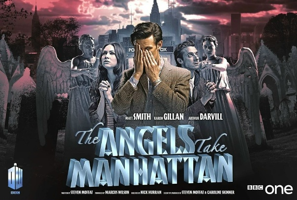

Эра Одиннадцатого Доктора (7 сезон)
<<< НАЗАД ||| 5. Ангелы захватывают Манхэттен ||| ДАЛЬШЕ >>>
или
ДАЛЬШЕ >>> к мини-эпизодам
MVO [TVShows], [Кириллица], [Baibako], [ВГТРК] или Original [ENG]
Субтитры: Русские {TrueTransLate} или Английские
 | Первая половина 7-го сезона (5 серий) |
The Angels Take Manhattan
Дата выхода: 29 сентября 2012
Формат: 45-минутный эпизод
| Варианты озвучек: | * Разные: смотрите по инструкции |
|---|---|
| Скачивание и просмотр: |
Душераздирающее прощание Доктора с Пондами: гонка со временем по улицам Манхэттена, в то время как вокруг них оживают статуи Нью-Йорка. Жизнь Рори в опасности, Эми и Доктор должны найти его, пока не стало слишком поздно. К счастью, им помогает и указывает правильный путь старый друг.


Трейлер:
https://youtu.be/FpjMcNUOz-I